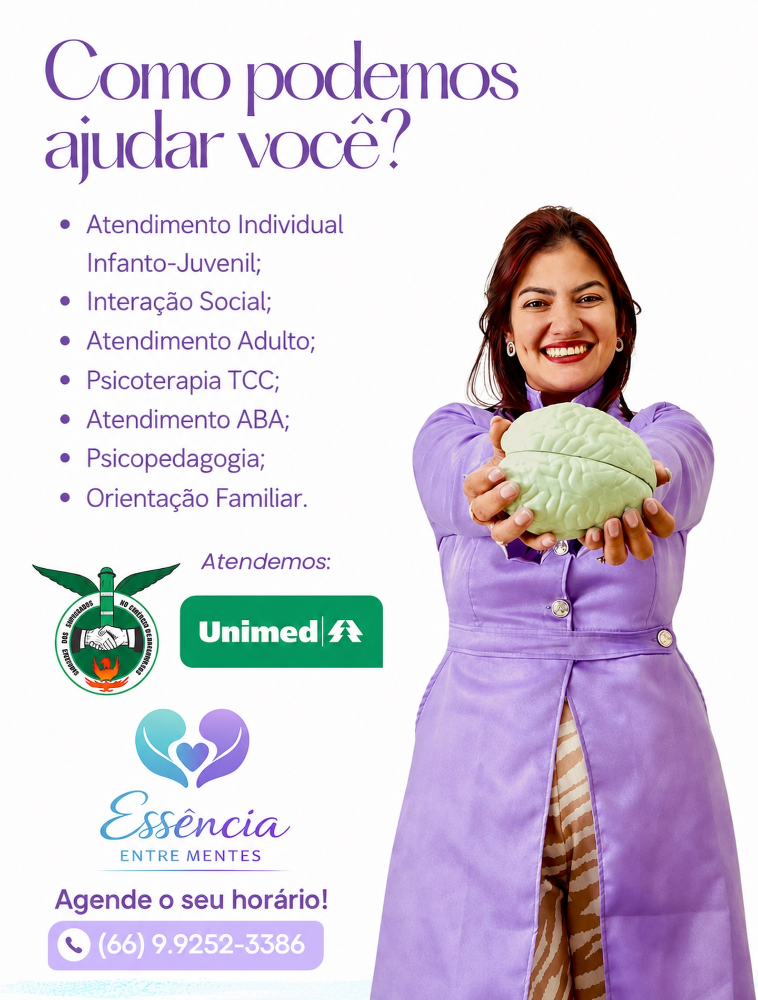

Psicoterapia
Atendimento psicológico para crianças, adolescentes e adultos, com espaço para trabalhar emoções, comportamentos e relações.
Terapia Cognitivo-ComportamentalPSICOLOGIA & DESENVOLVIMENTO HUMANO
Atendimento psicológico para crianças, adolescentes e adultos em Rondonópolis, com escuta atenta e acompanhamento individualizado.

ATENDIMENTOS
Cada acompanhamento considera a história, a fase de desenvolvimento e as necessidades de quem chega à clínica.
Atendimento psicológico para crianças, adolescentes e adultos, com espaço para trabalhar emoções, comportamentos e relações.
Terapia Cognitivo-ComportamentalAnálise do Comportamento Aplicada com plano individualizado e foco no desenvolvimento de habilidades.
Plano individualizadoAcompanhamento especializado para compreender dificuldades e desenvolver estratégias no processo de aprendizagem.
Aprendizagem e desenvolvimentoPARA QUEM
O acompanhamento considera o momento, as relações e as necessidades específicas de cada pessoa.
Tirar uma dúvidaAcolhimento com recursos adequados à infância e orientação à família quando necessário.
Um espaço seguro para falar sobre emoções, relações, mudanças e desafios dessa etapa.
Acompanhamento para compreender padrões, lidar com dificuldades e construir novas estratégias.
COMO FUNCIONA
A equipe entende sua necessidade, apresenta as opções disponíveis e combina o melhor horário.
Fale com a equipe pelo WhatsApp e conte brevemente o que procura.
Receba informações sobre atendimentos, horários, valores e convênios.
Escolha o horário disponível para realizar o primeiro atendimento.
RESPONSÁVEL TÉCNICA
Psicóloga · CRP 18/06112
Atendimento baseado em escuta qualificada, conhecimento técnico e respeito à individualidade.
Idealizadora e fundadora da Essência Entre Mentes, Suyanne atua com crianças, adolescentes e adultos nas áreas de psicoterapia, ABA e neuropsicologia.
NOSSO ESPAÇO
Veja os ambientes onde acontecem os atendimentos presenciais em Rondonópolis.
Assistir ao tourTOUR DA CLÍNICAVeja os ambientes da Essência Entre Mentes
DÚVIDAS FREQUENTES
Se sua dúvida não estiver aqui, fale diretamente com a equipe pelo WhatsApp.
A Essência Entre Mentes oferece atendimento para crianças, adolescentes e adultos, conforme a necessidade de cada pessoa.
No primeiro contato, a equipe entende brevemente a sua necessidade e orienta sobre o serviço mais adequado.
Sim. A clínica recebe pacientes presencialmente em Rondonópolis, na Avenida Duque de Caxias, 1625.
Há atendimentos particulares e por convênios. A cobertura varia conforme o plano e o serviço; consulte a equipe pelo WhatsApp.
Envie uma mensagem pelo WhatsApp. A equipe informa os horários disponíveis e as orientações para o primeiro atendimento.
A necessidade de encaminhamento pode variar conforme o atendimento e o convênio. A equipe confirma essa informação no primeiro contato.
LOCALIZAÇÃO
A clínica está localizada na Avenida Duque de Caxias, com atendimento mediante agendamento.
Essência Entre MentesCONTATO
Consulte os atendimentos, convênios e horários disponíveis pelo WhatsApp.
Chamar no WhatsApp